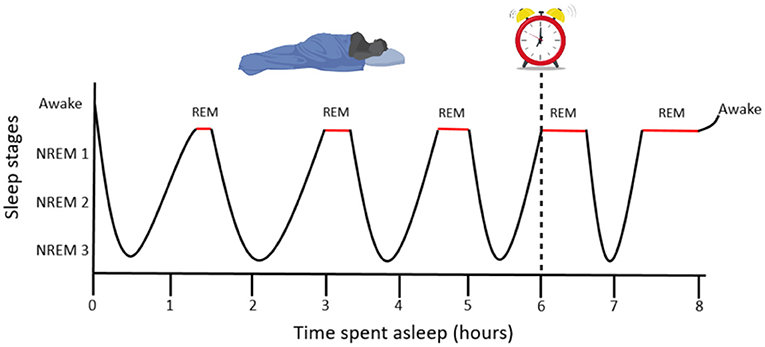

Sleep Patterns
Learn how technology affects your sleep and discover techniques for better rest in a digital world.

The teen sleep cycle differs from children and adults
Sleep in the Digital Age
Teens need 8-10 hours of sleep per night, yet many get far less. Your developing brain requires quality sleep for learning, memory, emotional regulation, and physical growth.
Teen Sleep Biology
During adolescence, your body's internal clock (circadian rhythm) naturally shifts, making you feel more awake at night and sleepier in the morning. This biological change often conflicts with early school start times.
How Technology Disrupts Sleep
- Blue light delays melatonin production
- Notifications create alertness
- Engaging content makes it hard to stop
Signs of Sleep Deprivation
- Difficulty waking up
- Trouble concentrating
- Irritability and mood swings
Sleep Improvement Strategies
Try these techniques to improve your sleep quality:
- Create a device-free hour before bed
- Keep a consistent sleep schedule (even on weekends)
- Make your bedroom dark, quiet, and cool
- Use night mode or blue light filters on devices